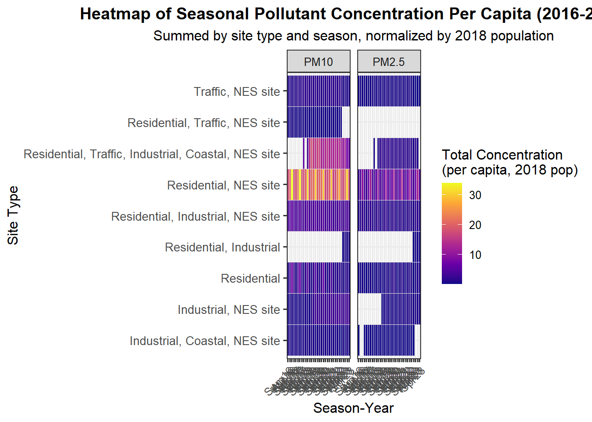
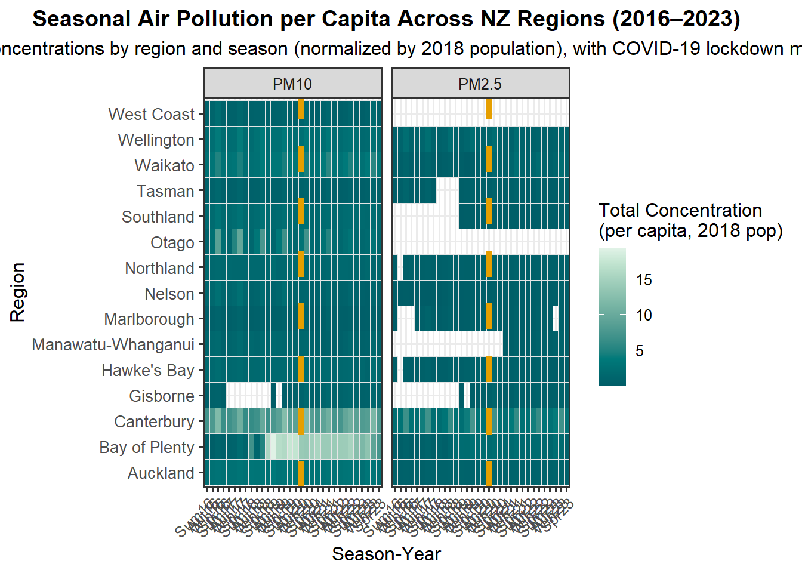

Traffic Density and Air Quality: Comparing Urban and Rural Auckland
Author
Vishal Goundar
Published
May 21, 2025
1 Abstract
This report analyzes the relationship between traffic density and air quality in urban and rural areas of Auckland, specifically focusing on Patumahoe and Queen Street. Using various air quality metrics and traffic data, we explore trends, correlations, and thresholds for air pollutants.
Data Import and Cleaning
2 Data from LAWA on Air Quality
2.1 Load LAWA file
# Get a list of all sheet names in the provided Excel file to understand the structure of the datasheet_names <-excel_sheets("data/lawa/lawa_airqualitydownloaddata_2016-2023.xlsx")sheet_names
# Skip the first 7 rows while loading the air quality data from the "Monitoring dataset" sheetairdata <-read_excel("data/lawa/lawa_airqualitydownloaddata_2016-2023.xlsx", sheet ="Monitoring dataset")# Preview the loaded data to inspect its structureglimpse(airdata)
The dataset contains 232,293 observations across 12 columns, detailing air quality measurements in Auckland. It includes site locations, pollutant indicators, concentrations, agencies, and timestamps, primarily tracking pollutant levels in residential areas.
# Clean column names to ensure consistency and remove spaces or special charactersairdata <-clean_names(airdata)# Display the structure of the cleaned datastr(airdata)
# Add a 'year' column for further analysis based on the dateairdata <- airdata |>mutate(longitude =as.numeric(longitude),latitude =as.numeric(latitude),# Add a 'year' columnyear =format(date, "%Y"))# Summary of the modified datasetsummary(airdata)
region agency lawa_site_id site_name
Length:232293 Length:232293 Length:232293 Length:232293
Class :character Class :character Class :character Class :character
Mode :character Mode :character Mode :character Mode :character
site_id latitude longitude town
Length:232293 Min. :-46.43 Min. :168.3 Length:232293
Class :character 1st Qu.:-43.38 1st Qu.:172.6 Class :character
Mode :character Median :-40.95 Median :174.8 Mode :character
Mean :-40.54 Mean :174.0
3rd Qu.:-37.78 3rd Qu.:175.7
Max. :-35.73 Max. :178.0
NA's :717 NA's :717
site_type indicator date
Length:232293 Length:232293 Min. :2016-01-01 00:00:00.00
Class :character Class :character 1st Qu.:2018-04-28 00:00:00.00
Mode :character Mode :character Median :2020-04-07 00:00:00.00
Mean :2020-03-08 17:45:54.02
3rd Qu.:2022-02-10 01:00:00.00
Max. :2023-12-31 01:00:00.00
concentration year
Min. : -5.568 Length:232293
1st Qu.: 6.404 Class :character
Median : 10.493 Mode :character
Mean : 12.661
3rd Qu.: 16.100
Max. :202.800
There are 232,293 data observations describing air quality sites, locations, pollutants, dates, and concentration values. 717 missing longitude, and latitude values. Contration of pollutants range from -5.568µg/m³ to 202.8µg/m³.
# Visualize concentration dataplot_conc <-ggplot(airdata, aes(x =factor(year), y = concentration)) +geom_boxplot(aes(fill = indicator), outlier.color ="#009E73", outlier.shape =1) +facet_wrap(~ indicator, nrow=2, scales ="free_y") +scale_fill_viridis_d(option ="plasma") +# discrete labs(title ="All Values",x ="Year",y ="Concentration (µg/m³)",fill ="Pollutant" ) +theme_minimal() +theme(plot.title =element_text(size =11, face ="bold"),legend.title =element_text(size =11, face ="bold"),axis.title =element_text(size =11, face ="bold"),strip.text =element_text(size =11, face ="bold") )# Add limits to y axisplot2 <- plot_conc +scale_y_continuous(limits =c(0, 25)) +labs(title ="Restricted Values") +theme(plot.title =element_text(size =11, face ="bold"))combined_plot <- plot_conc + plot2 +plot_layout(guides ="collect") +# Collect legendplot_annotation(title ="Air Pollutant Concentration in New Zealand (2016 - 2023)",subtitle ="Boxplots grouped by year and pollutant type",theme =theme(plot.title =element_text(size =13, face ="bold", hjust =0.5),plot.subtitle =element_text(size =11, hjust =0.5) ))combined_plot
PM10 levels are higher, with medians often below 15µg/m³ and frequent extreme outliers (~200µg/m³), suggesting episodic spikes from dust, construction, or fires. PM2.5 shows narrower IQRs and fewer outliers (<90µg/m³), indicating more consistent levels. Though lower in concentration, PM2.5 poses greater long-term health risks due to deeper lung penetration and possible cumulative effects.
# Preview observations with invalid concentrationairdata |>count(concentration <0, is.na(concentration))
# There are 107 observations with negative concentration. None of the concentrations are missing.# Replace negative concentration values with NAairdata <- airdata |>mutate(concentration =ifelse( concentration <0 , NA, concentration))# Convert the format of the date columnairdata <- airdata |>mutate(date =as.Date(date))
# Find the observations with missing longitude and latitudeairdata |>filter(is.na(longitude), is.na(latitude)) |>count(town, site_name, latitude, longitude)
# A tibble: 1 × 5
town site_name latitude longitude n
<chr> <chr> <dbl> <dbl> <int>
1 Rotorua Rotorua at Moses Rd NA NA 717
# There are 717 missing coordinates in town: Rotorua at site_name: Rotorua at Moses Rd# Filter Rotorua and count all site_name, longitude, and latitudeairdata |>filter(town =="Rotorua") |>count(region, site_name, latitude, longitude)
# A tibble: 2 × 5
region site_name latitude longitude n
<chr> <chr> <dbl> <dbl> <int>
1 Bay of Plenty region Rotorua at Edmund Rd -38.1 176. 5428
2 Bay of Plenty region Rotorua at Moses Rd NA NA 717
717 values of latitude and longitude missing for town Rotorua at site_name: Rotorua at Moses Rd. From Google Maps, These coordinates roughly point to latitude: -38.1482, longitude: 176.2273
# Fill in missing coordinates for Rotorua at Moses Rd site name with approximate central coordinates from Google Mapairdata <- airdata |>mutate(latitude =if_else( site_name =="Rotorua at Moses Rd"&is.na(latitude),-38.1482, latitude),longitude =if_else( site_name =="Rotorua at Moses Rd"&is.na(longitude),176.2273, longitude))# Display the updated coordinatesairdata |>filter(town =="Rotorua") |>count(site_name, latitude, longitude)
# A tibble: 2 × 4
site_name latitude longitude n
<chr> <dbl> <dbl> <int>
1 Rotorua at Edmund Rd -38.1 176. 5428
2 Rotorua at Moses Rd -38.1 176. 717
# Identify site names with multiple locationsrepeating_site <- airdata %>%distinct(site_name, longitude, latitude) %>%count(site_name) %>%filter(n >1) %>%pull(site_name)glimpse(repeating_site)
# There are 18 site_name with different longitude and latitude at least once.# Preview coordinates for Geraldineairdata |>filter(site_name =="Geraldine") |>mutate(across(c(longitude, latitude), ~format(.x, digits =16))) |>distinct(longitude, latitude)
# A tibble: 2 × 2
longitude latitude
<chr> <chr>
1 171.2414809999840 -44.10018100044980
2 171.2414809999841 -44.10018100044984
# The difference is in the precision in the 14th decimal places# Preview locations for site_name: Anzac Squareairdata |>filter(site_name =="Anzac Square") |>mutate(across(c(longitude, latitude), ~format(.x, digits =16))) |>distinct(longitude, latitude)
# A tibble: 2 × 2
longitude latitude
<chr> <chr>
1 171.2496629996010 -44.40448300080550
2 171.2496629996013 -44.40448300080546
# The difference is in the precision in the 13th and 14th decimal places# Replace longitude and latitude with the maximum values for repeating sitesairdata <- airdata %>%group_by(site_name) %>%mutate(longitude =max(longitude, na.rm =TRUE),latitude =max(latitude, na.rm =TRUE) ) %>%ungroup()# Ensure only repeating sites were modifiedairdata |>count(site_name, longitude, latitude) |>count(site_name) |>filter(n >1)
# A tibble: 0 × 2
# ℹ 2 variables: site_name <chr>, n <int>
# Preview daily more than one concentration recorded per siteairdata |>count(date, indicator, site_name, site_type) |>filter(n >1) |>glimpse()
# There are 13 dates for which the values are recorded more than one time at same site. # Compute average of concentration per daydailyairdata <- airdata |>group_by(date, year, indicator, site_name, site_type, town, latitude, longitude) |>summarise(mean_conc =mean(concentration, na.rm =TRUE),total_conc =sum(concentration, na.rm =TRUE),.groups ="drop" )glimpse(dailyairdata)
# Find the town with the maximum concentration of PM2.5 and PM10 per yearlabel_text <- dailyairdata |>group_by(year, indicator) |>filter(total_conc ==max(total_conc, na.rm =TRUE)) |>ungroup() |>select(date, year, town, indicator, total_conc)glimpse(label_text)
# Plot daily concentrations of PM10 and PM2.5, colored by town and faceted by pollutant typeplot_town_conc <-ggplot(dailyairdata, aes(x = date, y = total_conc, color = town)) +geom_point(size =2) +geom_text_repel(data = label_text,aes(x = date, y = total_conc, label = town),size =4 ) +scale_x_date(breaks =seq(as.Date("2016-01-01"), as.Date("2023-12-31"), by ="6 months"),date_labels ="%b%y" ) +facet_wrap(~ indicator, scales ="free_y", nrow =2) +scale_color_viridis_d(option ="plasma") +theme_bw() +labs(title ="Daily Particulate Matter Concentrations Across Multiple New Zealand Towns (2016–2023)",subtitle ="Trends in PM10 and PM2.5 levels over time, colored by town and faceted by pollutant type",x ="Date",y ="Daily Pollutant Concentration (µg/m³)" ) +theme(plot.title =element_text(size =13, face ="bold", hjust =0.5),plot.subtitle =element_text(size =11, hjust =0.5),axis.title =element_text(size =11, face ="bold"),legend.position ="none")plot_town_conc
Both PM10 and PM2.5 concentrations exhibit noticeable winter peaks (June–August) across multiple years, likely due to increased heating emissions and meteorological conditions. Summer months tend to have lower pollutant levels, reflecting improved dispersion and reduced combustion-based emissions. Occasional extreme peaks, mostly during winter months exceeding 100 µg/m³ (PM10) and 50 µg/m³ (PM2.5) indicate episodes of significantly poor air quality. Milton, Arrowtown, Timaru, Central Lower Hutt, and Tokoroa frequently experience PM10 spikes, while Rotorua, Kaiapoi, and Tokoroa see more PM2.5 surges, likely influenced by industry, transport, or topography. Pollutant levels fluctuate due to wind speed, temperature inversions, and precipitation, while seasonal trends are shaped by emissions from traffic, industrial activities, and wood burning.
2.2 Spatial plot of daily pollutant concentration
Transform everything to NZTM2000 (EPSG:2193), a projected coordinate system measured in meters, not degrees and plot.
# There are now 103 town, site_name, coordinates, indicator, and mean_conc over all the dates and years (2016-2023)# Check min, max of mean.conc per indicatoravg_airdata |>count(indicator, min =min(mean_conc), max =max(mean_conc))
# A tibble: 2 × 4
indicator min max n
<chr> <dbl> <dbl> <int>
1 PM10 4.69 30.9 66
2 PM2.5 4.69 30.9 37
# Minimum of mean_conc of PM10 and PM2.5 is 4.69079 and maximum is 30.91735. # Get New Zealand mapnz_map <-ne_countries(scale ="medium", country ="New Zealand", returnclass ="sf")# Add a projected CRS NZTM2000 (EPSG:2193), which is appropriate for New Zealandnz_map_proj <-st_transform(nz_map, 2193)avg_airdata_proj <-st_as_sf(avg_airdata, coords =c("longitude", "latitude"), crs =4326) |>st_transform(2193)glimpse(avg_airdata_proj)
PM10 and PM2.5 spatial distributions across New Zealand show differing average pollutant concentration patterns. PM10 concentrations exhibit broader regional variability, with high levels in Timaru, Arrowtown, Gore. PM2.5 concentrations appear more localized, clustering around major urban centers. The color gradient further emphasizes intensity differences, with PM10 displaying a more dispersed pattern.
Min. 1st Qu. Median Mean 3rd Qu. Max.
57.44 2993.20 4073.38 4148.35 5185.62 10859.53
# Yearly total concentration range from 57.44µg/m³ to 10859.53µg/m³, so using log scale is safe.# Filter town with the daily lowest and highest concentration of pollutantstext_label <- yearlyairdata |>group_by(year, indicator) |>filter(total_conc %in%c(min(total_conc, na.rm =TRUE), max(total_conc, na.rm =TRUE))) |>ungroup()glimpse(text_label)
Locations such as Timaru, Invercargill, and Mount Maunganui frequently appear with higher PM10 values, suggesting regional emissions from transport, industry, or meteorological conditions. Lower PM10 levels are recorded at Nelson Centre/North, Stoke, Gisborne, and Christchurch, indicating relatively better air quality in these areas.
Timaru, Blenheim, Tokoroa, and Kaiapoi consistently report elevated PM2.5 levels, emphasizing finer particulate pollution concerns, possibly linked to combustion sources. Sites like Blenheim, Nelson South, Hamilton, Te Kuiti, Patumahoe, Christchurch, Napier, and Awatoto exhibit lower PM2.5 concentrations, suggesting fewer major emission sources or better pollutant dispersion.
Seasonal influences (e.g., winter heating emissions) could explain peaks in both PM10 and PM2.5. Site-specific pollutant sources (e.g., traffic, industry, and wood burning) contribute to long-term trends.
# Add last two digits of year in column yeardailyairdata <- dailyairdata |>mutate(year =format(date, "%y"),month =as.integer(format(date, "%m")))# Aggregate pollutant concentrations per season per yeardailyairdata <- dailyairdata |>mutate(season =case_when( month %in%c(12, 1, 2) ~"Sum", month %in%c(3, 4, 5) ~"Aut", month %in%c(6, 7, 8) ~"Win", month %in%c(9, 10, 11) ~"Spr"),season_year =paste0(season, "_", year))season_order <-unique(dailyairdata$season_year)seasonairdata <- dailyairdata |>mutate(season_year =factor(season_year, levels = season_order, ordered =TRUE))seasonairdata <- seasonairdata |>group_by(season_year, town, indicator) |>summarise(total_conc =sum(total_conc, na.rm =TRUE),.groups ="drop")summary(seasonairdata$total_conc)
Min. 1st Qu. Median Mean 3rd Qu. Max.
8.0 624.5 1025.2 1189.8 1399.4 12305.8
# Seasonal total concentration range from 7.1µg/m³ to 31168.9µg/m³, so using log scale is valid.# Filter town with the seasonal lowest and highest concentration of pollutantstext_label <- seasonairdata |>group_by(season_year, indicator) |>filter(total_conc %in%c(min(total_conc, na.rm =TRUE), max(total_conc, na.rm =TRUE))) |>ungroup()glimpse(text_label)
The plots compare seasonal PM10 and PM2.5 concentrations across New Zealand sites from 2016 to 2023. PM10 levels (top) are consistently higher, spanning a wider dynamic range (10¹–10⁴ µg/m³), while PM2.5 (bottom) shows lower concentrations (10¹–10³ µg/m³). PM10 peaks occur more frequently in Mount Maunganui, Masterton, and Christchurch, whereas PM2.5 peaks persistently appear in Christchurch, Masterton, and Timaru. Both pollutants show seasonal fluctuations, with distinct high values in winter and lower values in summer. Town label annotations mark annual extremes, aiding temporal-spatial interpretation.
# Collect subgroup of longitude, latitude, site_type, and townairdata_group <- airdata |>distinct(longitude, latitude, site_type, town)glimpse(airdata_group)
# There are 69 data observations.# Create label dataset of coordinates, and townlabel_text <- airdata_group |>distinct(latitude, longitude, town)glimpse(label_text)
# Create a static map of spatial distribution of site typesplot1 <-ggplot(data = airdata_group) +geom_point(aes(x = longitude, y = latitude, color = site_type), size =3) +geom_text_repel(data = label_text, aes(x = longitude, y = latitude, label = town)) +scale_color_viridis_d(option ="turbo") +theme_bw() +labs(title ="Spatial Distribution of Air Quality Monitoring Site Type in New Zealand (2016–2023)",subtitle ="Monitoring site locations grouped by type",x ="Longitude", y ="Latitude", color ="") +theme(plot.title =element_text(size =16, face ="bold", hjust =0.5),plot.subtitle =element_text(size =12, hjust =0.5),axis.title =element_text(size =12, face ="bold"),axis.text =element_text(size =11, face ="bold"),legend.position ="bottom", legend.text =element_text(face ="bold"),panel.grid.major =element_line(color ="gray80", linetype ="dashed"),panel.grid.minor =element_blank())plot1
ggsave("dist.pdf", plot1, width=12, height=6)# Save RAMrm(airdata_group)
Residential monitoring sites are widespread across New Zealand, with dense clusters in the south, particularly Invercargill, Dunedin, and Christchurch. Industrial sites are more concentrated, notably around Christchurch and Wellington. Mixed-use sites, combining residential, traffic, and industrial classifications, are predominantly urban, appearing frequently in Wellington and Auckland. Coastal monitoring locations are dispersed along the shorelines, with a stronger presence in Wellington and Taupo regions. These distributions highlight the influence of urbanization and industrial activity on air quality monitoring priorities.
# Group by date, indicator, site_name, site_type, comput sum of concentrationsdailyairdata <- airdata |>group_by(date, indicator, site_name, site_type) |>summarise(total_conc =sum(concentration, na.rm =TRUE),.groups ="drop")glimpse(dailyairdata)
# Create a plot of PM2.5 and PM10 concentration versus date faceted by site_typeplot1 <-ggplot(dailyairdata, aes(x = date, y = total_conc, color = indicator)) +geom_point() +# geom_text_repel(data = label_text, aes(x = longitude, y = latitude, label = town)) +scale_color_manual(values =c("PM10"="#0072B2", "PM2.5"="#E69F00")) +facet_wrap(~ site_type, scales ="free") +theme_bw() +labs(title ="Daily PM2.5 and PM10 Concentration versus Date at Site Types in New Zealand (2016–2023)",subtitle ="Pollutant Concentration grouped by Monitoring site locations type",x ="Date",y ="Daily total concentration (µg/m³)",color ="Indicator" ) +theme(plot.title =element_text(size =13, face ="bold", hjust =0.5),plot.subtitle =element_text(size =12, hjust =0.5),legend.position ="bottom",axis.title =element_text(size =12, face ="bold"),axis.text =element_text(size =11, face ="bold"),axis.text.x =element_text(angle =45, hjust =1) )ggsave("dist.pdf", plot1, width=12, height =5.5)plot1
# Plot restricted by y axis for more than 25plot2 <- plot1 +scale_y_continuous(limits =c(25, NA)) +labs(subtitle ="Pollutant Concentration Restricted for at least 25µg/m³", )plot2
ggsave("dist.pdf", plot2, width=12, height =5.5)# Save RAMrm(dailyairdata)
Across all site types, PM10 concentrations (blue) consistently exceed PM2.5 (orange), with clear seasonal peaks—particularly in winter—indicating heightened pollution likely from domestic wood burning. Residential and NES-designated sites show the most pronounced PM10 spikes, often surpassing 100 µg/m³, highlighting the impact of household heating in colder months. Industrial, NES sites also record frequent peaks above 75 µg/m³, while Industrial, Coastal, NES sites exhibit more moderate values, likely moderated by coastal airflow. Mixed-use sites like Residential, Traffic, Industrial, Coastal, NES show moderate variability, suggesting influence from multiple emission sources. Traffic-related sites generally maintain lower concentrations, possibly due to vehicle emission controls. Residential, Industrial data is only available for 2023 but already shows elevated levels, underscoring potential local sources. Overall, the long-term data from 2016 to 2023—except for a few newer sites—demonstrates New Zealand’s comprehensive air quality monitoring network and the influence of seasonal and site-type-specific factors on particulate pollution levels.
# Compute scalar medians (as single value)median16_pm25 <- airdata |>filter(indicator =="PM2.5", year ==2016) |>summarise(median_val =median(concentration, na.rm =TRUE)) |>pull(median_val)# Compute scaler medians (as single value)median16_pm10 <- airdata |>filter(indicator =="PM10", year ==2016) |>summarise(median_val =median(concentration, na.rm =TRUE)) |>pull(median_val)# Add a new column using scalar values properlynormalize_airdata <- airdata |>mutate(baseline =case_when( indicator =="PM2.5"~ median16_pm25, indicator =="PM10"~ median16_pm10,TRUE~NA_real_# fallback for other indicators ))# Compute normalized concentration values relative to the 2016 baselinenormalize_airdata <- normalize_airdata |>mutate(normalized_concentration = concentration / baseline)# Randomly select 6 towns from the dataset for visualizationset.seed(13) # For reproducibilitytownlist <-sample(unique(airdata$town), 10)# Filter the dataset to include only the selected townsnormalize_filtered <- normalize_airdata |>filter(town %in% townlist) |>mutate(town_indicator =paste0(town, "_", indicator))# Create a faceted plot to visualize pollutant trends, highlighting differences across townsplot1 <-ggplot(filter(normalize_filtered), aes(x=date, y = normalized_concentration)) +geom_line(aes(color = indicator), lwd=2) +facet_wrap(~ town_indicator, scales ="free") +scale_color_viridis_d(option ="turbo") +theme_bw() +labs(title ="Normalized Air Pollutant Concentrations Across Selected New Zealand Towns (2016–2023)",subtitle ="PM2.5 and PM10 Levels Adjusted to 2016 Median Concentration for Comparative Analysis",x ="Date",y ="Normalized Pollutant Concentration (Relative to 2016 Median)",legend ="Pollutant Type" ) +theme(plot.title =element_text(size =13, face ="bold", hjust =0.5),plot.subtitle =element_text(size =12, hjust =0.5),axis.title =element_text(size =12, face ="bold"),axis.text =element_text(size =11, face ="bold"),axis.text.x =element_text(angle =45, hjust =1),strip.text =element_text(size =11, face ="bold") )plot1
ggsave("dist.pdf", plot1, width=12, height=6)
Compared to the 2016 median concentration, PM2.5 and PM10 levels show varied trends across locations. Auckland City Centre and Rotorua exhibit sharp PM2.5 spikes around 2020, while Cromwell and Timaru experience periodic peaks in both pollutants. Other towns display stable or fluctuating patterns, with some decreasing trends in PM2.5. These changes indicate local factors affecting air quality, including urban emissions, seasonal variations, and regulatory impacts on pollutant concentrations.
# Randomly select 10 town from the list (seeded for reproducibility)set.seed(13) random_town <-sample(town_list, 10) |>sort()# Display the randomly selected townsrandom_town
# Group by region and filter airdata for the 10 randomly selected towns airdata_random_town <- airdata |>group_by(region) |>filter(town %in% random_town) |>ungroup()# Count number of distinct town, date, indicatorairdata_random_town |>count(town, date, indicator) |>filter(n>1) |>head()
# Aggregate total concentration for each town by date and indicator to prepare for plottingairdata_random_town <- airdata_random_town |>group_by(town, date, indicator) |>summarize(total_conc =sum(concentration, na.rm =TRUE),.groups ="drop" )# Preview the aggregated dataglimpse(airdata_random_town)
# Preview the summary of total_conc of randomly selected townairdata_random_town |>summary()
town date indicator total_conc
Length:34897 Min. :2016-01-01 Length:34897 Min. : 0.000
Class :character 1st Qu.:2018-02-13 Class :character 1st Qu.: 6.828
Mode :character Median :2020-01-19 Mode :character Median : 10.851
Mean :2020-01-14 Mean : 14.220
3rd Qu.:2021-12-05 3rd Qu.: 16.723
Max. :2023-12-31 Max. :159.579
Total_conc range from 0 to 159.579 from 1 January 2016 to 31 December 2023.
# Replace zero's with 1e-05, since log works on positive valuesairdata_random_town <- airdata_random_town |>mutate(total_conc =ifelse( total_conc ==0, 1e-05, total_conc))summary(airdata_random_town$total_conc)
Min. 1st Qu. Median Mean 3rd Qu. Max.
0.00001 6.82817 10.85118 14.21979 16.72300 159.57900
# Define a reusable function to plot airdata concentration trends by selected town, indicator, and date. This function uses faceted plots with colorblind-friendly palettes for better accessibilityplot_selected_conc <-function(data, title, subtitle, x_label, y_label, sum_var) {# Create the plot using ggplot2 p <-ggplot(data, aes(x = date, y = {{ sum_var }}, color = indicator)) +geom_line() +scale_color_manual(values = colorblind_palette) +facet_wrap(~ town, scales ="free_y") +labs(title = title,subtitle = subtitle,x = x_label,y = y_label,color ="Indicator" ) +theme_bw() +theme(legend.position ="bottom",axis.text.x =element_text(angle =45, hjust =1),plot.title =element_text(size =16, hjust =0.5, face ="bold"), # Center the main titleplot.subtitle =element_text(size =12, hjust =0.5) )return(p)}
# Plot log-scaled airdata trends for 10 randomly selected towns using the custom plot function. The plot will show daily PM10 and PM2.5 concentrations across towns, scaled logarithmically.plot_random_log <-plot_selected_conc(data = airdata_random_town,title ="Air Pollutant Concentration Trends in 10 Random Town (2016-2023)",subtitle ="Log-scaled daily PM10, and PM2.5 concentration by indicatior",x_label ="Month-Year",y_label ="Daily Concentration (log scale)",sum_var = total_conc) +scale_x_date(breaks =seq(as.Date("2016-01-01"), as.Date("2023-12-31"), by ="6 months"),date_labels ="%b %y"# Format date for better readability ) +scale_y_log10(labels = scales::label_scientific()) # Use log scale for concentration# Display the plotggsave("dist.pdf", plot_random_log, width=12, height=5.5)plot_random_log
# Save RAMrm(airdata_random_town)
Auckland City Centre maintains stable PM10 and PM2.5 concentrations, with occasional peaks, while Napier and Timaru exhibit frequent spikes, likely driven by seasonal factors. Cromwell shows a distinct PM10 seasonal pattern, whereas Taihape experiences frequent PM2.5 drops in 2023. Stoke’s PM10 sharply declines in 2023. Morrinsville, Pakuranga, Patumahoe, and Rotorua display relatively stable air quality with minor variations, contrasting Napier and Timaru’s fluctuations. PM10 and PM2.5 concentrations generally follow similar trends, though PM2.5 sometimes exhibits sharper changes, reflecting different emission sources or meteorological influences. Seasonality plays a crucial role in shaping air pollution patterns across these towns.
tibble [51 × 3] (S3: tbl_df/tbl/data.frame)
$ site_name: chr [1:51] "126 Hautapu Street" "34 Maata Street" "Alexandra at 5 Ventry Street" "Anzac Square" ...
$ town : chr [1:51] "Taihape" "Taumarunui" "Alexandra" "Timaru" ...
$ n : int [1:51] 3072 3466 2333 5829 4782 5272 5177 2864 2675 2783 ...
51 site_name are not same as 51 town.
# Preview multiple groups of coordinates and regionairdata |>count(longitude, latitude, region) |>filter(n >1) |>tail()
# A tibble: 6 × 4
longitude latitude region n
<dbl> <dbl> <chr> <int>
1 176. -38.1 Bay of Plenty region 717
2 177. -39.6 Hawke's Bay region 5336
3 177. -39.5 Hawke's Bay region 3748
4 177. -39.5 Hawke's Bay region 4782
5 177. -38.0 Bay of Plenty region 2203
6 178. -38.7 Gisborne region 3071
# Remove the word region in region column then trim white spaceairdata <- airdata |>mutate(region =str_trim(str_remove(region, regex("region", ignore_case =TRUE))))tail(airdata$region, 3)
[1] "West Coast" "West Coast" "West Coast"
official_nz_regions <-c("Northland", "Auckland", "Waikato", "Bay of Plenty", "Gisborne", "Hawke's Bay", "Taranaki", "Manawatu-Whanganui", "Wellington", "Tasman", "Nelson", "Marlborough", "West Coast", "Canterbury", "Otago", "Southland")# Preview regions in airdata not in the official list of NZ regionsairdata |>filter(!(region %in% official_nz_regions)) |>count(region)
# A tibble: 1 × 2
region n
<chr> <int>
1 Manawatū-Whanganui 6538
We need to clean Manawatu-Whanganui region. It has bar on top of u in Manawatu.
# Clean region name Manawatu-Whanganuiairdata <- airdata |>mutate(region =ifelse(region =="Manawatū-Whanganui", "Manawatu-Whanganui", region))# Compute total concentration of groups of coordinates and regionregion_airdata <- airdata |>group_by(region) |>summarise(longitude =round(longitude, 5), latitude =round(latitude, 5),total_conc =sum(concentration, na.rm =TRUE),.groups ="drop" )str(region_airdata)
tibble [232,293 × 4] (S3: tbl_df/tbl/data.frame)
$ region : chr [1:232293] "Auckland" "Auckland" "Auckland" "Auckland" ...
$ longitude : num [1:232293] 175 175 175 175 175 ...
$ latitude : num [1:232293] -36.9 -36.9 -36.9 -36.9 -36.9 ...
$ total_conc: num [1:232293] 318149 318149 318149 318149 318149 ...
# Collect coordinates and region for labellinglabel_text <- region_airdata |>group_by(region, total_conc) |>summarise(longitude =min(longitude), latitude =min(latitude),.groups ="drop" )str(label_text)
tibble [15 × 4] (S3: tbl_df/tbl/data.frame)
$ region : chr [1:15] "Auckland" "Bay of Plenty" "Canterbury" "Gisborne" ...
$ total_conc: num [1:15] 318149 317754 643087 47055 166544 ...
$ longitude : num [1:15] 175 176 171 178 177 ...
$ latitude : num [1:15] -37.2 -38.1 -44.7 -38.7 -39.6 ...
# Get New Zealand mapnz_map <-ne_countries(scale ="medium", country ="New Zealand", returnclass ="sf")
# Plot monitoring sites locatioms colored total concentration by regionplot <-ggplot(data = nz_map) +geom_sf(fill ="gray95", color ="gray80") +# Basemapgeom_point(data = region_airdata, aes(x = longitude, y = latitude, color = total_conc), size =5 ) +geom_text_repel(data = label_text, aes(x = longitude, y = latitude, label = region, color = total_conc),box.padding =0.3, segment.color ="grey30", hjust =-0.1) +scale_color_viridis_c(option ="turbo", trans ="log10",labels = scales::label_scientific()) +coord_sf(xlim =c(165, 180), ylim =c(-48, -34)) +# Add coord_sf to zoom in to nzlabs(title ="Total Region Pollutant concentrations from Monitoring Sites locations in New Zealand",x ="Longitude",y ="Latitude",color ="Total Pollutant\nConcentration (µg/m³)" ) +# Add titletheme_bw() +theme(legend.position ="right") +annotation_scale(location ="br", width_hint =0.3) +# Adds scale barannotation_north_arrow(location ="tl", which_north ="true", style =north_arrow_fancy_orienteering())# Save map as PDFggsave("dist.pdf", plot, width=12, height=6)plot
# Save RAMrm(region_airdata)rm(nz_map)
Areas such as Auckland and Canterbury exhibit higher overall pollution levels, likely due to urban density, traffic emissions, and industrial activities. The more rural regions like Gisbourne appear in cooler colors, indicating lower concentrations.
3 Load 2018 population data and regional map data from Stats NZ
# Read the spatial data (GeoPackage) for SA2 regionssa2_nz <-st_read("data/SA2_nz.gpkg")
Reading layer `SA2_NZ' from data source
`C:\Users\vishal\Documents\Earthsci705\projectfile\project\data\SA2_NZ.gpkg'
using driver `GPKG'
Simple feature collection with 2151 features and 3 fields
Geometry type: MULTIPOLYGON
Dimension: XY
Bounding box: xmin: 1089970 ymin: 4747987 xmax: 2470102 ymax: 6194308
Projected CRS: NZGD2000 / New Zealand Transverse Mercator 2000
# Preview the spatial data structureglimpse(sa2_nz)
# The SA2_NZ layer was read from a GeoPackage file using the GPKG driver. It contains 2,151 features with three attribute fields and multipolygon geometries in the NZGD2000 Transverse Mercator projection.# Load regional map data from [regions](https://datafinder.stats.govt.nz/layer/104254-regional-council-2020-generalised/)# Load a shape file of regionsregions <-st_read("data/statsnz-regional-council-2020-generalised-SHP/regional-council-2020-generalised.shp")
Reading layer `regional-council-2020-generalised' from data source
`C:\Users\vishal\Documents\Earthsci705\projectfile\project\data\statsnz-regional-council-2020-generalised-SHP\regional-council-2020-generalised.shp'
using driver `ESRI Shapefile'
Simple feature collection with 17 features and 6 fields
Geometry type: MULTIPOLYGON
Dimension: XY
Bounding box: xmin: 1067061 ymin: 4701317 xmax: 2523320 ymax: 6242140
Projected CRS: NZGD2000 / New Zealand Transverse Mercator 2000
# The regional-council-2020-generalised layer, read from an ESRI Shapefile, contains 17 multipolygon features representing New Zealand's regional councils. It includes six attribute fields and uses the NZGD2000 Transverse Mercator projected coordinate system for spatial reference.
3.1 Spatial join of datasets: population and region
# Find values from regions columns which does not matchas.data.frame(regions) |>filter(REGC2020_1 != REGC2020_2)
REGC2020_V REGC2020_1 REGC2020_2 LAND_AREA_
1 08 Manawatū-Whanganui Region Manawatu-Whanganui Region 22220.58
AREA_SQ_KM SHAPE_Leng geometry
1 25322.14 1176349 MULTIPOLYGON (((1823327 573...
# The two columns are different for Manawatu, which has a bar on top in one and the REGC2020_2 does not. Let's select REGC2020_2.# Ensure both layers are in same CRSst_crs(sa2_nz)$epsg
[1] 2193
st_crs(regions)$epsg
[1] 2193
# They are same, both sa2_nz and regions datasets are in crs of epsg:2193# Perform a spatial join to assign each SA2 to a regionsa2_nz <-st_join(sa2_nz, regions[, c("REGC2020_2", "geometry")]) # Preview column names of sa2_nzcolnames(sa2_nz)
# This dataset includes 2,332 rows with SA2 names, IDs, 2018 population data, regional council names, and multipolygon geometries, representing spatial boundaries for statistical areas across New Zealand.# Check class of geomclass(sa2_nz$geom)
[1] "sfc_MULTIPOLYGON" "sfc"
# The geom column in sa2_nz is of class sfc_MULTIPOLYGON, meaning it stores spatial features as multipolygons using the simple features (sf) framework for geospatial vector data in R.# Clean column names of sa2_nz sa2_nz <- sa2_nz |>clean_names()# View column names of sa2_nzcolnames(sa2_nz)
# There are 17 distinct region in the sa2_nz dataset# Rename region column and remove region from valuessa2_nz <- sa2_nz |>rename(region = regc2020_2) |>mutate(region =str_trim(str_remove(region, regex("region", ignore_case =TRUE))))glimpse(sa2_nz)
# Sa2_centroids has 2332 rows with 5 columns, geom column is of point type# Extract longitude and latitude from centroidssa2_centroids <- sa2_centroids |>mutate(longitude =st_coordinates(geom)[, 1],latitude =st_coordinates(geom)[, 2])glimpse(sa2_centroids)
# Now there are two more columns of longitude and latitude of double type# Group by region and slice minimum location and preserve geometrylabel_text <- sa2_centroids |>group_by(region) |>slice_min(order_by = longitude + latitude, with_ties =FALSE) |># Sum ensures SW-mostungroup() |>select(region, longitude, latitude)glimpse(label_text)
Rows: 17
Columns: 4
$ region <chr> "Area Outside", "Auckland", "Bay of Plenty", "Canterbury", "…
$ longitude <dbl> -176.5269, 174.7283, 175.9479, 169.2815, 176.7677, 176.3104,…
$ latitude <dbl> -43.93630, -37.25538, -39.05760, -44.94244, -38.45032, -40.5…
$ geom <POINT [°]> POINT (-176.5269 -43.9363), POINT (174.7283 -37.25538)…
# Label_text contains 17 rows of regions with minimum longitude, minimum latitude, geometry column of point type# Preview classclass(label_text)
[1] "sf" "tbl_df" "tbl" "data.frame"
# The object label_text is a spatial data frame of class sf, meaning it contains geospatial features along with attribute data, making it compatible with tidyverse and spatial analysis functions.# Check coordinate reference system are samest_crs(sa2_nz) ==st_crs(label_text)
[1] TRUE
# Classes of datasets: sa2_nz and label_text are same
# Group and merge SA2 polygons by region to get region-level boundaries and region total populationregion_boundaries <- sa2_nz |>group_by(region) |>summarise(total_pop =sum(pop2018),geometry =st_union(geom), .groups ="drop")# Take a glimpseglimpse(region_boundaries)
# The region_boundaries dataset contains 17 regions with total population and multipolygon geometries. It uses the WGS 84 geodetic coordinate system and covers New Zealand's full extent, making it suitable for spatial analysis and regional population visualization.# Plot region population with both SA2 polygons and region boundariesplot_spatial <-function(data, fill_var) {ggplot(data = data) +geom_sf(aes(fill = {{ fill_var }}), color ="#999999", size =0.2) +# SA2 polygonsgeom_text_repel(data = label_text,aes(x = longitude, y = latitude, label = region),hjust =-0.2,seed =12# Ensures reproducible label placement ) +coord_sf(xlim =c(165, 180), ylim =c(-48, -34)) +scale_fill_viridis_c(option ="turbo", labels = scales::label_scientific() ) +theme_minimal() +labs(x ="Longitude", y ="Latitude",fill ="Population (2018)" ) +annotation_scale(location ="br", width_hint =0.3) +annotation_north_arrow(location ="tl", which_north ="true",style =north_arrow_fancy_orienteering())}plot1 <-plot_spatial(sa2_nz, pop2018) +labs(title ="SA2 Population") plot2 <-plot_spatial(region_boundaries, total_pop) +labs(title ="Region Population") combined_plot <- plot1 + plot2 +plot_annotation(title ="Spatial Distribution of the 2018 Population in SA2 Areas (Left) and Regions (Right) of New Zealand",subtitle ="A comparison of population patterns across fine-scale SA2 areas and broader regional boundaries",theme =theme(plot.title =element_text(size =16, hjust =0.5, face ="bold"),plot.subtitle =element_text(size =12, hjust =0.5),legend.position ="bottom") # Forces legend to bottom )# Save the plotggsave("dist.pdf", combined_plot, width =13, height =6)# Save RAMrm(region_boundaries)
These maps compare population distribution in New Zealand at different scales. The SA2 Population map (left) provides detailed insights, highlighting densely populated urban clusters, while the Region Population map (right) aggregates data, emphasizing regional total population concentration. Auckland appears dominant in both maps, though the finer SA2 breakdown reveals local density patterns. The left map’s scale (0–6,000) captures variations within cities, whereas the right map (400,000–1.6 million) focuses on broader regional totals.
# Explore sa2_nzclass(sa2_nz)
[1] "sf" "data.frame"
colnames(sa2_nz)
[1] "sa2_name" "sa2_id" "pop2018" "region" "geom"
# The sa2_nz object is a simple features (sf) spatial data frame containing five columns: sa2_name, sa2_id, pop2018, region, and geom. It includes 2018 population data and multipolygon geometries for each SA2 area in New Zealand.# Explore airdataclass(airdata)
# The airdata object is a tibble data frame containing air quality data, including region, site details, location, pollutant indicators, concentration values, and corresponding dates and years for analysis.# Convert airdata data.frame to sf# Convert columns "longitude" and "latitude" to WGS84 (EPSG:4326)airdata <-st_as_sf(airdata, coords =c("longitude", "latitude"), crs =4326)glimpse(airdata$geometry)
sfc_POINT of length 232293; first list element: 'XY' num [1:2] 174.7 -36.9
# The geometry column in airdata now contains 232,293 spatial point features in WGS84 coordinates, each representing air monitoring locations with longitude and latitude, starting near Auckland at (174.7, -36.9).# Preview region not in airdata regionas.data.frame(sa2_nz) |>filter(!(region %in% airdata$region)) |>count(region) |>as.data.frame()
region n
1 Area Outside 1
2 Taranaki 65
# The region: Area Outside and Taranaki are not in airdata# Count region, town, site_nameas.data.frame(airdata) |>distinct(region, town, site_name) |>glimpse()
# There are 67 distinct region, town, and site_name
# Preview matching CRSst_crs(sa2_centroids)$epsg
[1] 4326
st_crs(airdata)$epsg
[1] 4326
# Both datasets have same crs epsg of 4326# Preview summarystr(sa2_centroids$geom)
sfc_POINT of length 2332; first list element: 'XY' num [1:2] 172.9 -34.6
str(airdata$geometry)
sfc_POINT of length 232293; first list element: 'XY' num [1:2] 174.7 -36.9
# sa2_centroids has 2,332 points; airdata has 232,293 points. Both are sfc_POINT with XY coordinates in WGS84.# Preview sa2_name in region Waikatoas.data.frame(sa2_centroids) |>filter(region =="Waikato") |>distinct(sa2_name) |>glimpse()
#There are 264 distinct sa2_name in region: Waikato# Preview site_name for region Waikato in airdataas.data.frame(airdata) |>filter(region =="Waikato") |>distinct(site_name) |>glimpse()
# There are 8 site_name in region: Waikato# Perform a spatial join of airdata and sa2_centroids to assign each SA2 to a regionairdata_with_sa2 <-st_join(airdata, sa2_centroids[, c("region", "sa2_name", "pop2018", "geom")], join = st_nearest_feature)# Preview column names colnames(airdata_with_sa2)
# Save RAM, remove data not neededrm(airdata)rm(sa2_centroids)
# Preview summary of concentrationsummary(airdata_with_sa2$concentration)
Min. 1st Qu. Median Mean 3rd Qu. Max. NA's
0.00 6.41 10.50 12.67 16.10 202.80 107
# Concentration ranges from 0 to 202.8, with mean 12.67, median 10.5, and 107 missing values (NA's).# Use ARIMA imputation to approximate the missing concentration values.airdata_with_sa2 <-as.data.frame(airdata_with_sa2) |>mutate(arima_concentration =na_kalman(concentration, model ="auto.arima")) # ARIMA imputationsummary(airdata_with_sa2$arima_concentration)
Min. 1st Qu. Median Mean 3rd Qu. Max.
0.000 6.407 10.494 12.664 16.100 202.800
# All the 107 missing values are now computed using ARIMA and ranges from 0 to 202.8 with a mean of 12.664 and median of 10.494
3.2 Normalize pollutant concentration by 2018 population and plot concentration per capita trends for eac site type.
Min. 1st Qu. Median Mean 3rd Qu. Max.
0.00 6.40 10.47 12.87 16.16 202.80
# total_conc ranges from 0 to 202.8, with mean 12.87, median 10.47.# Calculate daily concentration per pop2018 daily_airdata <- daily_airdata |>mutate(conc_per_capita = total_conc / pop2018 )# Preview the new columnsummary(daily_airdata$conc_per_capita)
Min. 1st Qu. Median Mean 3rd Qu. Max.
0.000000 0.002628 0.004437 0.007249 0.007542 0.486536
# conc_per_pop18 ranges from 0 to 0.486536 with a mean of 0.007249 and a median of 0.004437# Define function for pollutant trends. This function takes a data frame and plot labels as inputs, and returns a line chart with customised colours for indicators.p <-ggplot(daily_airdata, aes(x = date, y = conc_per_capita)) +geom_point(size =1, alpha =0.6, color ="#999999") +geom_smooth(aes(color ="linear"), method ="lm", se =FALSE, size =1) +geom_smooth(aes(color ="gam"), method ="gam", se =FALSE, size =1) +facet_wrap(~ site_type_indicator, scales ="free") +scale_color_manual(name ="Trend", # Legend titlevalues =c("linear"="#CC79A7", "gam"="#56B4E9") ) +theme_bw() +labs(title ="Daily Pollutant Concentration Per Capita Trends by Site Type and Indicator",subtitle ="Concentration per 2018 population with trend lines (ARIMA-smoothed)",x ="Date",y =expression("Concentration (µg/m"^3*") per capita") ) +theme(plot.title =element_text(size =13, hjust =0.5, face ="bold"),plot.subtitle =element_text(size =11, hjust =0.5),axis.text.x =element_text(angle =45, hjust =1, face ="bold", size =11),axis.text.y =element_text(face ="bold", size =11),axis.title =element_text(face ="bold", size =11),legend.position ="bottom")p
ggsave("dist.pdf", p, width =12, height =6)
The plots show daily pollutant concentration per capita trends across various site types and indicators from 2016 to 2024. All panels display point clouds with overlaid smoothed trend lines: blue (GAM) and purple (linear). Trends vary by pollutant and site type—some panels (e.g., “Residential_PM2.5”) show clear seasonal peaks, while others (e.g., “Traffic, NES site_PM10”) reveal flatter trends. Linear and GAM lines often diverge, indicating non-linearity. High variability and density patterns are especially notable in traffic and industrial sites, suggesting persistent emissions across time.
3.3 Heatmap of seasonal pollutant concentration per capita by season-year and site type
# Plot the heatmap of seasondatap2 <-ggplot(sitedata, aes(x = season_year, y = site_type, fill = total_conc_per_capita)) +geom_tile(color ="grey90") +facet_wrap(~ indicator) +scale_fill_viridis_c(option ="C",name ="Total Concentration\n(per capita, 2018 pop)") +labs(title ="Heatmap of Seasonal Pollutant Concentration Per Capita (2016-2023)",subtitle ="Summed by site type and season, normalized by 2018 population",x ="Season-Year", y ="Site Type") +theme_bw(base_size =12) +theme(axis.text.y =element_text(size =10),axis.text.x =element_text(angle =45, hjust =1),plot.title =element_text(face ="bold", hjust =0.5),plot.subtitle =element_text(hjust =0.5) )p2

ggsave("dist.pdf", p2, width =12, height =6)
The heatmap shows PM10 concentrations generally higher than PM2.5 across most site types and seasons from 2016–2023. PM10 peaks prominently at “Residential, NES site” and “Residential, Traffic, Industrial, Coastal, NES site”, reaching values above 30. PM2.5 values remain mostly below 10, with modest elevations at residential sites. Missing data patterns differ slightly between the two pollutants, notably in residential-industrial combinations.
3.4 Regional Trends in Seasonal Per Capita Pollutant Concentration (2016–2023)
This heatmap shows seasonal per capita pollutant concentrations across regions (2016–2023), helping identify spatial and temporal pollution trends.
# Aggregate seasonal data to regionregiondata <- seasondata |>group_by(region, season_year, year, indicator) |>summarise(total_conc_per_capita =sum(conc_per_capita, na.rm =TRUE), .groups ="drop")summary(regiondata$total_conc_per_capita)
Min. 1st Qu. Median Mean 3rd Qu. Max.
0.003854 0.516080 1.029960 1.991850 2.228748 19.300111
# This shows the summary statistics of a dataset, indicating a right-skewed distribution with a mean (1.99) higher than the median (1.03) and a maximum value of 19.3.# Plot the heatmapp1 <-ggplot(regiondata, aes(x = season_year, y = region, fill = total_conc_per_capita)) +geom_tile(color ="grey90") +# Add lockdown marker (assuming x-axis is a factor or character)geom_vline(xintercept =which(levels(factor(regiondata$season_year)) =="Aut20"), linetype ="dashed", color ="#E69F00", lwd =2) +facet_wrap(~ indicator) +scale_fill_continuous_sequential(palette ="Mint", name ="Total Concentration\n(per capita, 2018 pop)", rev =FALSE) +labs(title ="Seasonal Air Pollution per Capita Across NZ Regions (2016–2023)",subtitle ="Summed pollutant concentrations by region and season (normalized by 2018 population), with COVID-19 lockdown marked (in orange)",x ="Season-Year", y ="Region") +theme_bw(base_size =12) +theme(axis.text.y =element_text(size =10),axis.text.x =element_text(angle =45, hjust =1),plot.title =element_text(face ="bold", hjust =0.5),plot.subtitle =element_text(hjust =0.5) )p1

ggsave("dist.pdf", p1, width =12, height =6)
The PM10 plot shows consistently higher concentrations across regions, while PM2.5 exhibits more variability with lower overall levels. Seasonal patterns are evident in both, but PM10 peaks are more pronounced. COVID-19 lockdowns affected both pollutants, with sharper declines in PM2.5. Regional disparities are stronger in PM10, highlighting differences in pollution dynamics and sources. The PM2.5 plot has more white spaces, indicating lower concentrations.